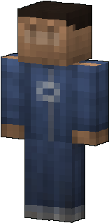

WIKI
WIKI
Your first night
New to Zomblocks? Eight steps to survive your first night.

Read the guidebook
You get the Zombie Guidebook the first time you join. Use it: a big book floats in front of you. Right click turns the page, punch goes back, sneak + right click jumps to the next chapter. It has a page for every zombie, weapon and item. Hold it in your hand: it is also a radio whose compass points to the nearest town or boss lair. Read more →

Grab a weapon
A baseball bat, a golf club or a frying pan is enough for the first zombies. Duffel bags and supply crates often hold one; the Brawler and the Camp Guard sell them for 5 scrap. Read more →

Search everything
Trash cans, vases, duffel bags, cardboard boxes and toolboxes can be searched (right click). They hold food, scrap, gadgets and tools, and restock after 5 minutes. Read more →

Collect scrap
Zombies drop scrap, and every survivor you talk to gives you 1 a day. Spend it in Haven Hill, the safe town: its 8 traders each sell 2 kinds of items, never the same stock twice. Read more →

Do not get bitten
Some zombies infect you. A bandage pauses the infection, medicine cures it. Watch the monitor next to your left hand: it shows the infection every minute. Read more →

Find a friend
Hire an ally from a Camp Guard (20 scrap) or recruit a free survivor. Allies fight with you and pick up loot. Read more →

Barricade
Carry furniture into doorways. Zombies bash what blocks them, so keep an eye on it and put a new piece when one breaks. Read more →

Know your enemy
Read the zombie pages of this wiki: each one tells you how it fights and how to beat it. Read more →